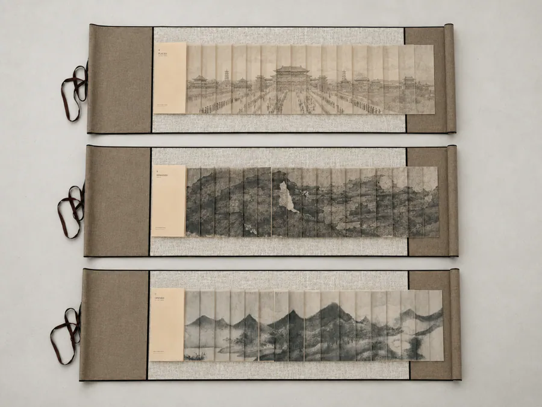
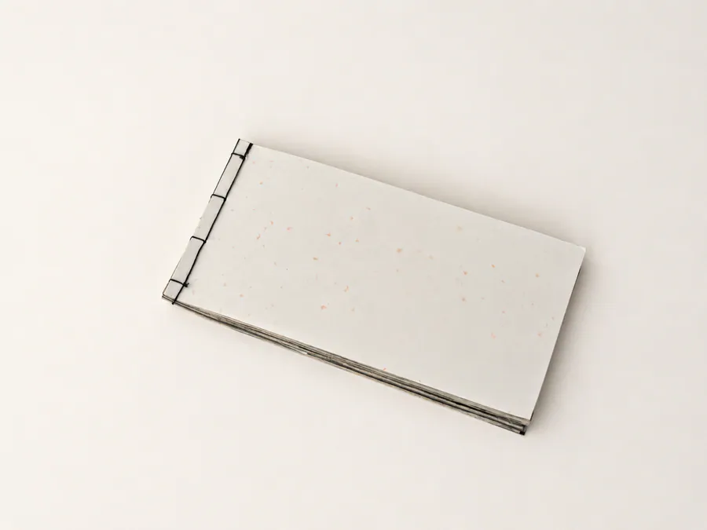
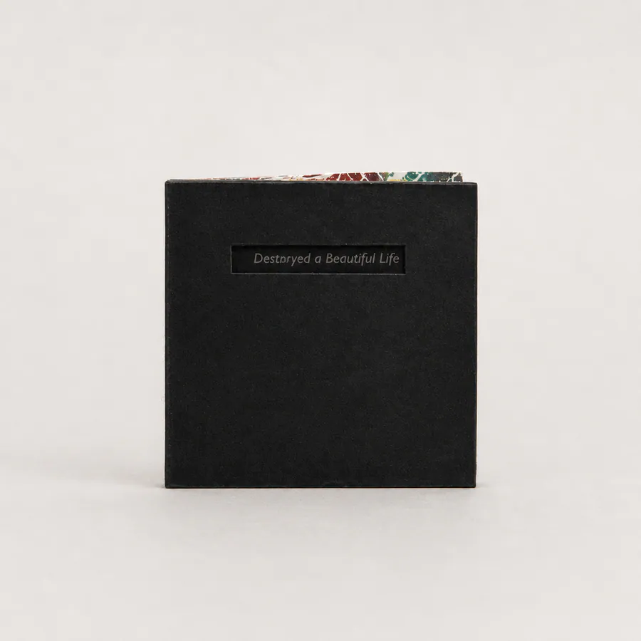
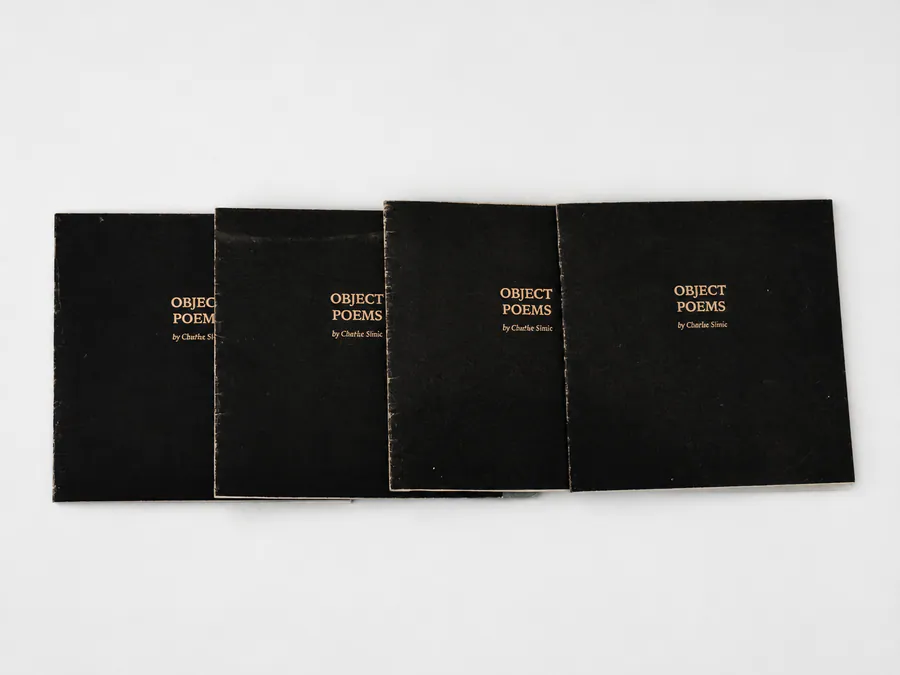
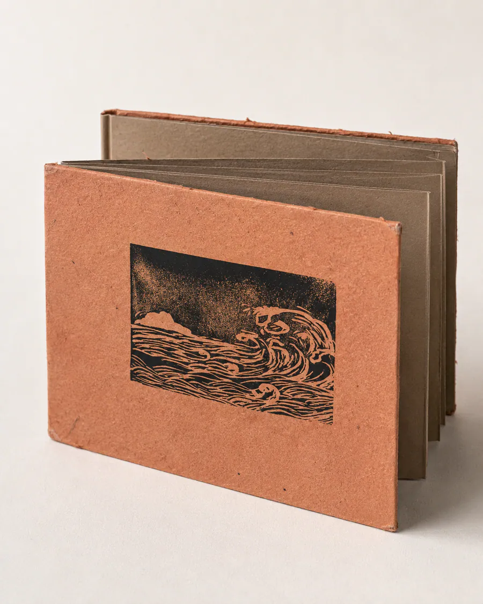
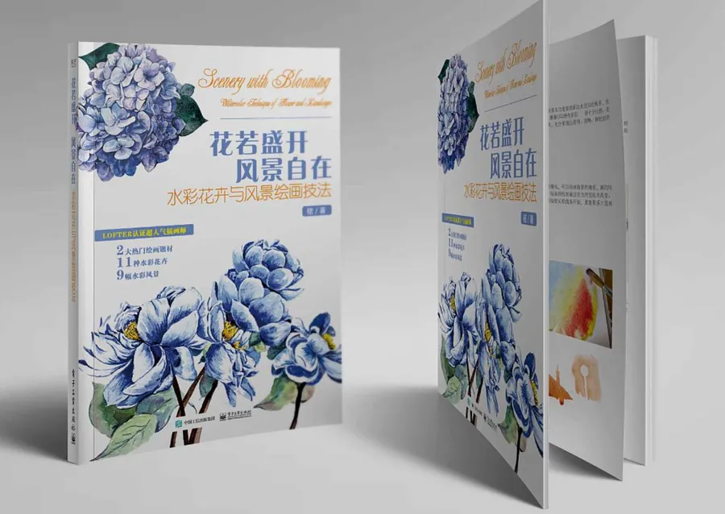
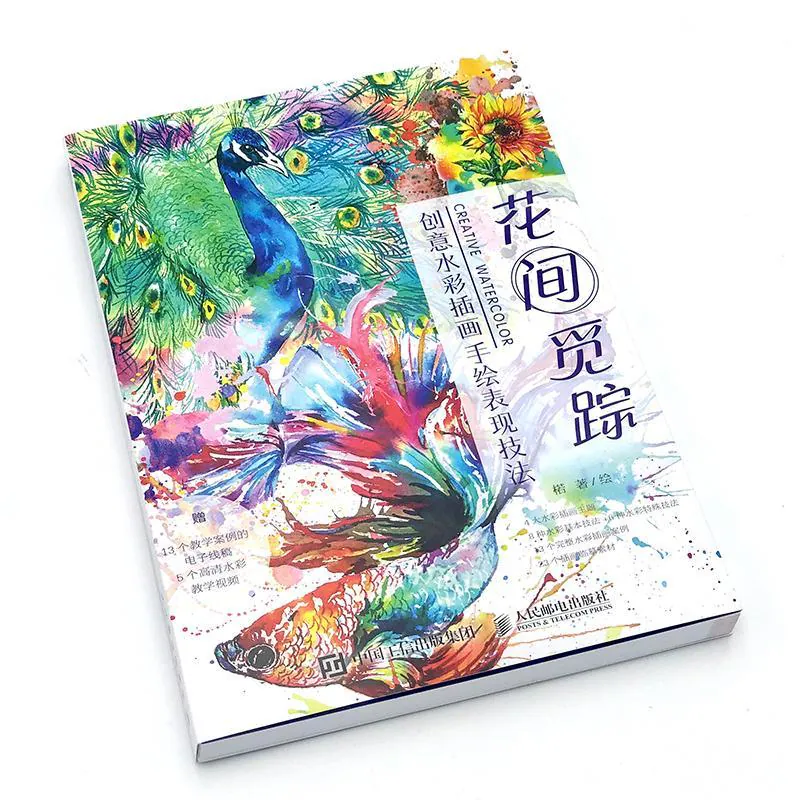
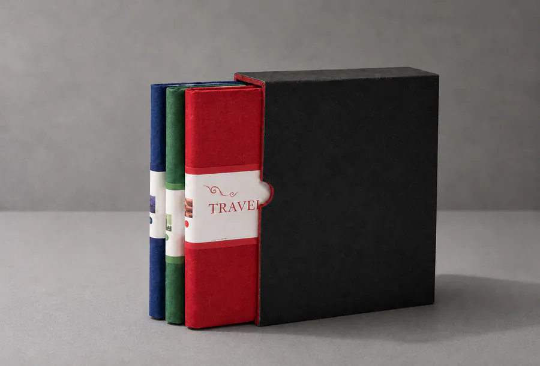
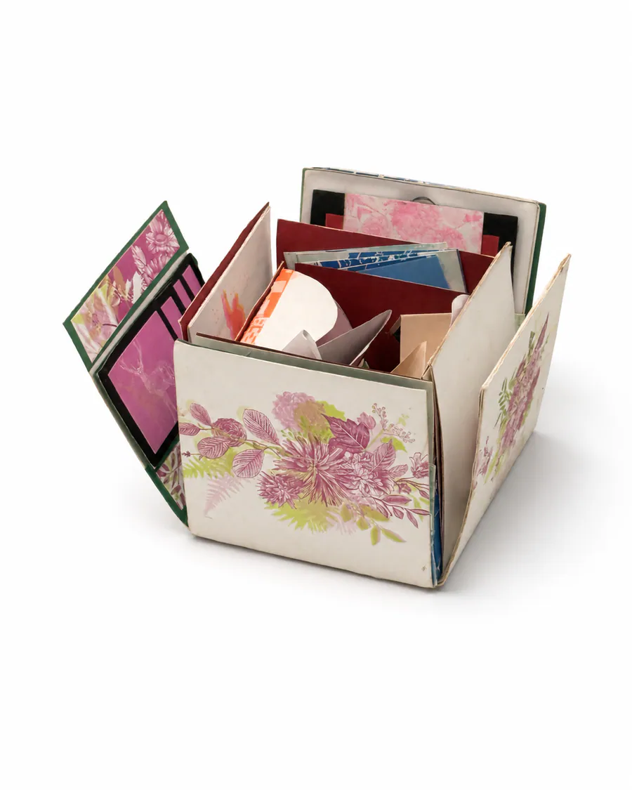

Selected Works
Works
Artworks, artist books, material investigations and interactive experiments developed across a broad practice.
Section 01
Current Practice
Four current projects spanning collected commercial paper, embodied writing, artist-book structures and responsive digital conditions.

AFTER USE
A broader body of work developing artworks from collected packaging, wrappers, labels and other commercial papers through comparison, grouping and remaking.
The Three Metamorphoses
An interactive exploration in which movement, stillness and presence accumulate as blur, rupture, density and fading traces; future installation and audience study remain proposals.

Three States of Order (Beijing Orders)
One hand-bound dragon-scale prototype and two speculative digital studies translating embodied encounters with Beijing’s architectural and historical order into layered material reading.

Skin of Writing
A hand-bound book object gathering the pressure, correction, and residue of writing practice.
Section 02
Foundations Archive / 2016–2021
Early experiments in printed sequence, folding, transparency, portable reading, and paper mechanisms.
Open archive 6 works

Destroyed a Beautiful Life
A small sequential book on growth, care, and destruction.

Object Poems
Small translucent paper objects exploring reading and handling.

Folded Poem Study
A folded printed study turning poetry into continuous reading.


Drawings in Printed Form / Publications
Two published drawing books shown as early printed image practice.

Travel Journal Series
Layered travel journals using collected fragments and page structures.

Risograph Box
A hand-assembled box opening into layered paper mechanisms.